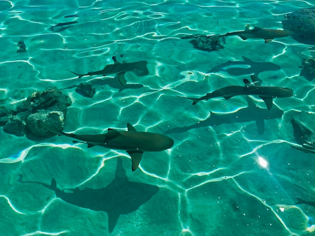
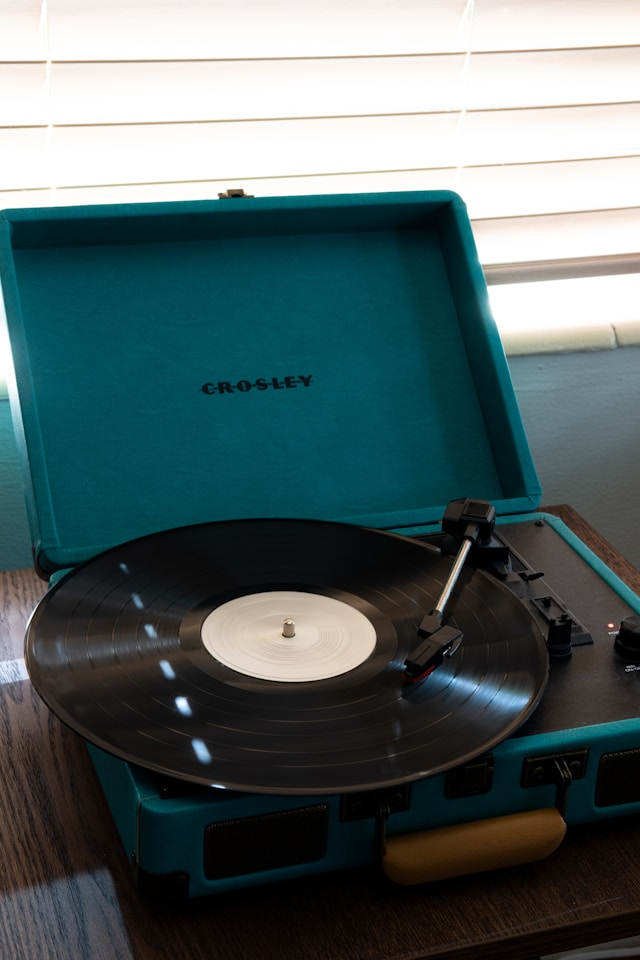

I've always held a profound interest for the ocean and all things and beings in it, but sharks have a special place in my heart. Arguably one of the most misunderstood predators on the planet, sharks are an incredible hunter species with around 530 subspecies!
I believe video games are a great way to engage with your imagination and explore different realms of possibilities. Even though I'm a fairly casual video game enjoyer, there are a few I love and play quite often:
Learn more about my favourite video game, Little Nightmares...
Learning about the world's history is very important for our society to be able to evolve. Luckily for me, I really enjoy learning about history, mythology, and various other aspects of different cultures around the world. Some specfici historical interests of mine include:
Learn more about Ancient Greece...
Music has been a passion of mine for as long as I can remember. I play several instruments and love listening to music as well as making it. Some of my favourite bands are Radiohead, System of a Down, The Cure, The Arctic Monkeys, and Deftones.
